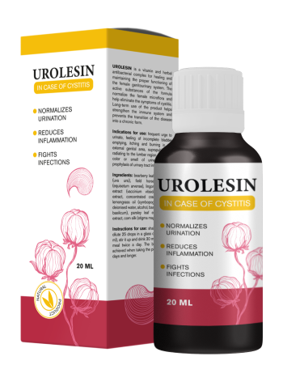
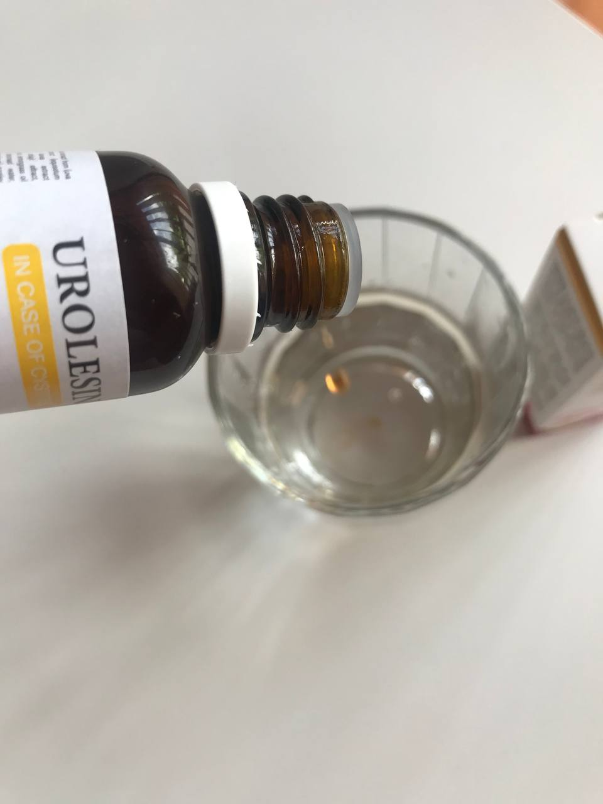
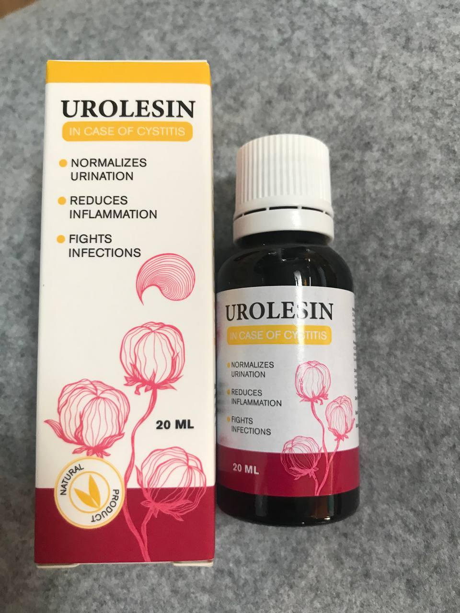
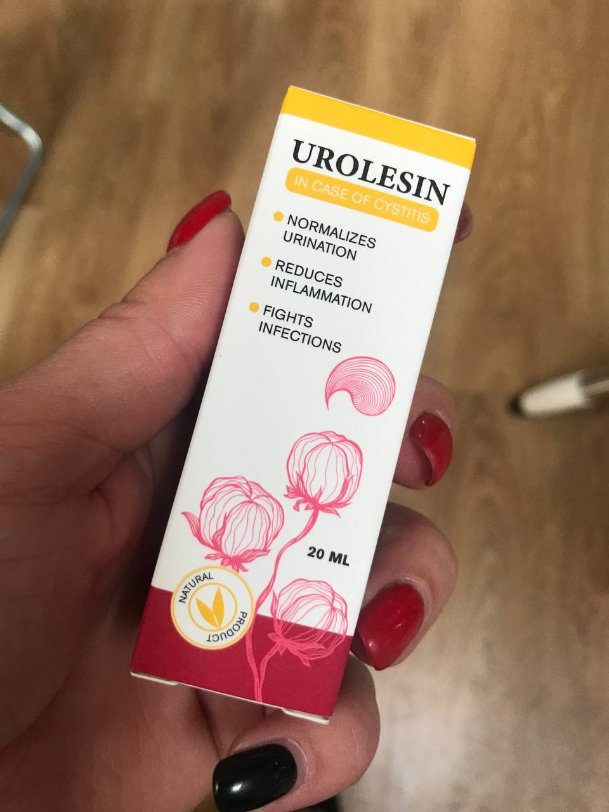

A hólyaghurut egy olyan betegség, ami mindig rosszkor jön. Hogyan és mivel lehet kezelni?
A 20-70 évesek között a hólyaghurut előfordulási gyakorisága igen nagy ahhoz viszonyítva, hogy az esetek csak 20%-a gyógyítható. Hogy miért olyan nehézen kezelhető a betegség, és hogyan gyógyítható, arról az orvostudományok doktora, professzor Hegedűs Imre fog mesélni.

– Doktor Úr, jó napot kívánok! Kérjük, mondja el, hogy mi is pontosan a hólyaghurut, és kik tartoznak a kockázati csoportba?
– Jó napot kívánok! A hólyaghurut a húgyhólyag nyálkahártyájának gyulladása, amely rengeteg nőt érint. A férfiak és a gyerekek között kevésbé gyakran fordul elő, és enyhébb tünetekben nyilvánul meg. A betegséget kényelmetlenség kíséri, súlyosbodása esetén pedig akár a cselekvőképesség elvesztése is fenyegetheti a beteget.
– Tényleg olyan komoly a hólyaghurut?
– Ez egy alattomos betegség. Tízből kilenc beteg akkor jön el hozzám, amikor már nem képes saját maga megbirkózni a tünetekkel. Orvosként le is szidom őket, de emberként abszolút meg tudom érteni mindegyiküket. Ez egy nagyon intim, kellemetlen betegség, és mindenki, amilyen hamar csak lehet, szeretne megszabadulni tőle. Ilyen esetekben az emberek csak az életben maradásra gondolnak.
Mire gondol először az, aki éles fájdalmat érez? A fájdalom csökkentésére. És azt csak tablettákkal csökkenthetik. Ezért ahelyett, hogy követné az ösztöneit, először a gyógyszertárba rohan valamilyen antibiotikumért.
– És az antibiotikumok nem hatékonyak?
– Mondjuk részben segítenek. Mert tényleg enyhítik a fájdalmat. Úgy tűnik, mintha a betegség teljesen elmúlt volna. De valójában egyáltalán nem tűnik el. Egy-két hónap múlva újra megmutatkozhat. És aztán simán krónikus formát is ölthet a dolog. Az antibiotikumokat laboratóriumi vizsgálatok alapján kell kiválasztani.
Először azonosítani kell a kórokozót, aztán vele szemben kell kiválasztani egy hatékony gyógyszert. Ha az ember össze-vissza szedi őket, a hatás csak pillanatnyi lesz, később pedig épp ellenkező hatást idézhet elő.

– Mik lehetnek a hólyaghurut okai és mik a tünetei?
– A betegséget akár egy fertőzés, de akár más jellegű megbetegedés is okozhatja. A kialakulás okától függetlenül viszont a tünetek mindig ugyanazok:
- égő érzés a hüvelyben, szúró fájdalom;
- gyakori vizelési inger;
- kis mennyiségű vizelet;
- homályos vagy élénksárga vizelet, a vizelet lehet véres is;
- rossz közérzet, hőemelkedés, gyengeség.
A hólyaghurut leggyakoribb okai a következők:
- szex közbeni sérülés;
- legyengült immunrendszer;
- a baktériumok húgyhólyagba történő behatolása a húgycsövön keresztül;
- krónikus fertőzés gócpontjai a szervezetben;
- átvészelt nőgyógyászati, nemi betegségek;
- medencei szervek hipnotermiája;
- traumatikus hatás;
- a szervezet hormonális rendellenességei;
- a húgycső individuális anatómiai szerkezete.
– Miért veszélyes a hólyaghurut és a nem megfelelő kezelése?
– Nem számít, hogy a beteg hogyan kapta el a hólyaghurutot először, az a lényeg, hogy a további életminősége a szervezet védekező képességétől függ. Ha már szedett antibiotikumokat (és ez a leggyakoribb és kevésbé hatékony kezelési mód), akkor veszélyben van a szervezete.
Idővel a baktériumok rezisztensé válnak az antibiotikumokkal szemben, aztán mutálódnak, és így nagy immunitást szereznek. Így a hólyaghurut gyógyítása nehezebbé válik, a betegség pedig krónikus formát ölt. Ez azt jelenti, hogy az ember beteg marad, fertőzött, még akkor is, ha a hólyaghurut tünetei egyáltalán nem súlyosak.
A hólyaghurut következményei közé tartoznak: a vizelet-inkontinencia, a vesemedence-gyulladás, a vese tályogos gyulladása, a veseelégtelenség és a meddőség.

– De azért gyógyítható a hólyaghurut?
– Igen, gyógyítható. Antibiotikumok segítségével kezelhető, de csak teljes körű kivizsgálást követően és egy olyan kezelőorvos szigorú megfigyelése mellett, akiben a beteg megbízhat. A növényi szerekkel érdemes megelőző lépéseket tenni a húgyúti betegségekkel szemben, ugyanis segítenek elmulasztani a krónikus hólyaghurutot, és természetesen ugyancsak megakadályozzák az akut hólyaghurut kialakulását.
– Tudna valamilyen konkrét készítményt ajánlani?
– Úgy gondolom, tiszta lelkiismerettel csak ajánlani tudom az t. Ez egy növényi alapú készítmény, ami rengeteg úgynevezett természetes antibiotikumot tartalmaz. A szintetikus gyógyszerekkel szemben ez viszont nem fejt ki semmilyen káros hatást a szervezetre. És épp olyan hatékony, mint a hagyományos gyógyszerek.
Talán ez az egyetlen készítmény, amelyet orvosi előírás nélkül is lehet szedni, mind a hólyaghurut első tüneteinem jelentkezésénél, mind pedig az elhanyagolt esetekben. Egyébként az ára is elfogadható.
– Tehát Ön azt mondja, hogy lehetséges a betegség otthoni kezelése?
– Igazából az emberek így is, úgy is megpróbálják önállóan kezelni az ilyen típusú betegségeket. Hála Istennek, hogy ma már létezik egy természetes gyógymód, az , amely nincs káros hatással a szervezetre, mint a többi gyógyszertárban kínált gyógyszer. Ugyanis azok olyan mennyiségben tartalmaznak antibiotikumot, hogy simán megölhetnének egy lovat is.
Az azonban nem ilyen. A készítmény növényi alapú. A hatás ugyanaz, mint az orvosi kezelés során, annyi különbséggel, hogy itt viszont nincsnek mellékhatások. Szóval igen, persze, nem kizárt a betegség otthoni kezelése, sőt ragaszkodom hozzá, hogy az emberek otthon kezeljék is magukat, de kérem, használjanak biztonságos készítményeket.
– Köszönöm a beszélgetést, Doktor Úr!
Az 50% kedvezménnyel kapható 2022.08.10-ig. Megrendelheti az alábbi űrlap kitöltésével és annak elküldésével
Pont jókor akadtam rá erre a cikkre. Nagyon köszönöm! t rendeltem, nagyon várom.
Nekem akut hólyaghurutom volt. Éles vagy más fajdalom nem kísérte, de vizelés után állandóan kényelmetlenséget éreztem. Az orvosom t ajánlott. Ez egy nagyszerű készítmény, nagyon gyorsan segített.
A tesóm az orvostudományi egyetemen tanul, azt mondja, hogy a hólyaghurutnak nagyon súlyos következményei lehetnek.
A legrosszabb dolog az, hogy a hólyaghurut nagyon gyorsan krónikussá válik. És ezt saját tapasztalatból mondom. Kipróbálom az t. Köszönet a cikkért!
El sem tudom képzelni, hogyan lehetne elmenni ezzel orvoshoz, ha a dolog súlyosbodás során még a mosdóba is alig tudsz kimenni. lett a megmentőm!!!
Sajnos, nekem sokáig tartott, mire időpontot kaptam volna az orvoshoz. A legközelebbi időpont mindig csak egy hét múlva lett volna, és addig belehaltam volna a fájdalomba.
30 évesen először szembesültem a hólyaghurut tüneteivel. Éles fájdalmat kezdtem érezni pisilés közben, valamint szex közbeni is fájdalmaim voltak. Azonnal elmentem az orvoshoz. És felírta az t. A készítmény nagyon jó, gyorsan megszüntette az összes tünetemet. Mindenkinek ajánlom!
Minél idősebb vagyok, annál ijesztőbb az élet...
Az embernek fiatal korától figyelnie kell az egészségére, hogy ne merüljön fel ilyen probléma.
A hólyaghurut az átkom! Hét évig szenvedtem tőle. A terhesség előtt csupa rémálom volt, mindent kipróbáltam: a húgyhólyag mosását, a húgyhólyag területének melegítését, rengeteg tablettát és más gyógyszereket. A terhesség alatt minden elmúlt, de aztán a betegség kiújult. Szörnyű fájdalom, éles fájdalom, és mindez amellett, hogy szoptattam a kisfiámat. Egy barátomtól hallottam az ről, és ez a termék volt az utolsó reményem. És a reményem nem volt hiábavaló. A kúra elkezdése után egy kis idővel a tünetek enyhültek, aztán teljesen eltűntek. Az egy nagyszerű szer!
